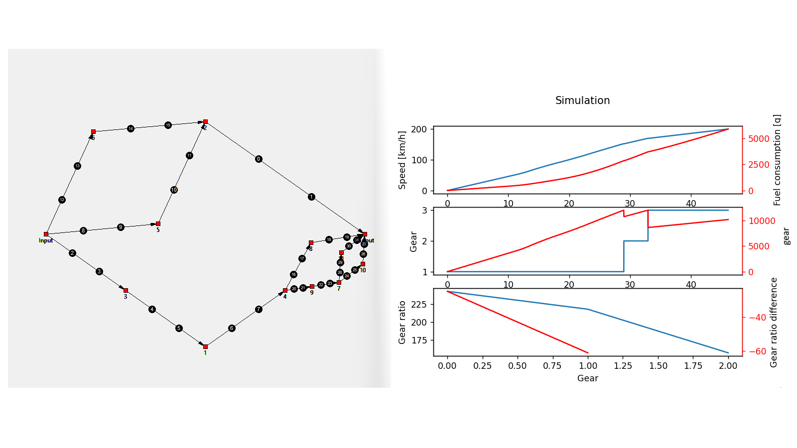
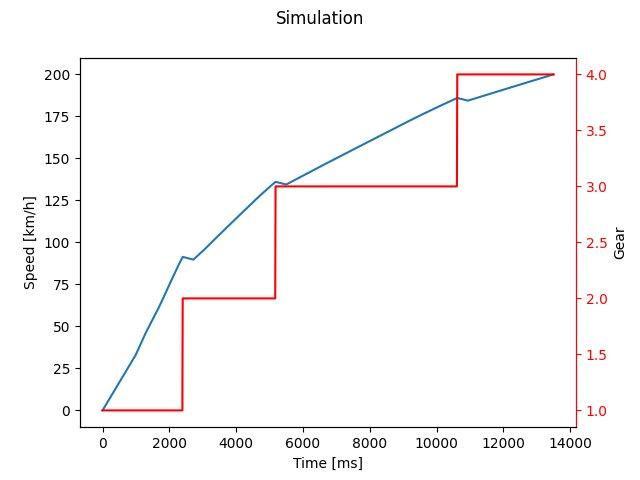

Stochastic gearbox

In the Data driven design course, I treated the design of a gearbox as an optimisation problem. Instead of choosing the gear ratios by hand, I wrote a Python program that describes a gearbox as a graph of shafts and gears, generates random gearboxes, and lets a genetic algorithm evolve them. Each gearbox has its own DNA, which is mutated and crossed over generation after generation to keep only the best designs.
To judge each gearbox, the program simulates a full acceleration from 0 to 200 km/h. It uses real engine curves (torque, power and fuel consumption), air resistance, rolling resistance, the efficiency of every loaded and unloaded gear and shaft, and the time needed to change gears. The fitness can be the time to reach top speed or the fuel consumed. Since thousands of simulations are needed, I ran them in parallel on every core of the processor. During the course, I also compared genetic algorithms, simulated annealing and Bayesian optimisation on other design problems.

Gearbox as a graph
A generated gearbox: red squares are shafts and black circles are gears, from the input to the output

Simulation results
Speed, fuel consumption, engaged gear and gear ratios of the best gearbox

Acceleration
Simulated acceleration from 0 to 200 km/h with four gears

Engine curves
The torque, power and fuel consumption curves used as input of the simulation